운동
출퇴근/등하교
에너지 충전
휴식
집중
몰라두됭
다시 듣기
더보기
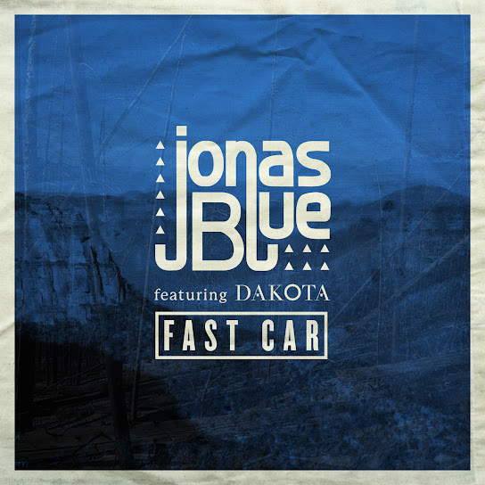
Fast Car(feat. Dakota)
노래 • Jonas Blue(조나스 블루)
Beam (Dannic Radio Mix)
노래 • Mako
Secrets(feat. Vassy)
노래 • Tiësto 및 KSHMR
깊은 기도 (Deep Prayer)
노래 • Key Meditation
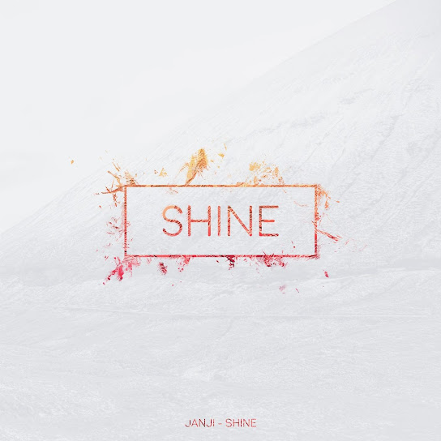
Shine
노래 • Janji
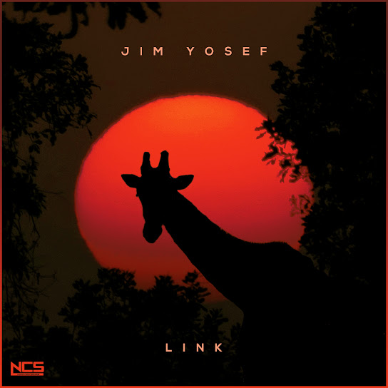
Link
노래 • Jim Yosef
이 노래로 뮤직스테이션 시작하기
빠른 선곡
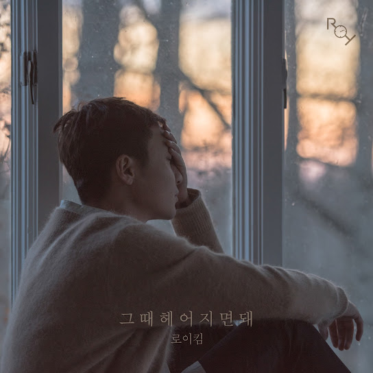
그때 헤어지면 돼 Only Then
로이킴 Roy Kim • 그때 헤어지면 돼 Only Then

깊은 기도 (Deep Prayer)
Key Meditation • Deep Prayer
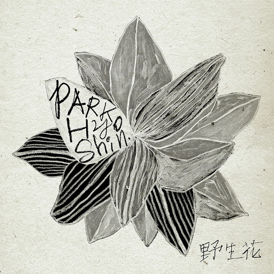
야생화
박효신 • 야생화
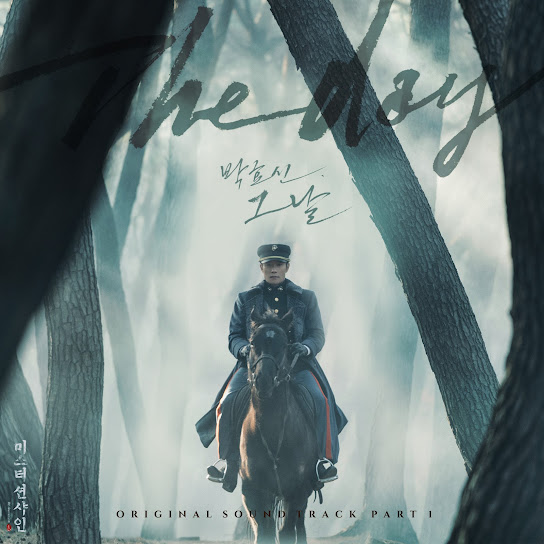
The Day
Park Hyo Shin
은혜(Grace)
Key Meditation • Grace

그루터기 (Remnant)
Key Meditation • Deep Prayer
숨
박효신 • I am A Dreamer
주의 말씀은 (Your Word)
Key Meditation • Deep Prayer
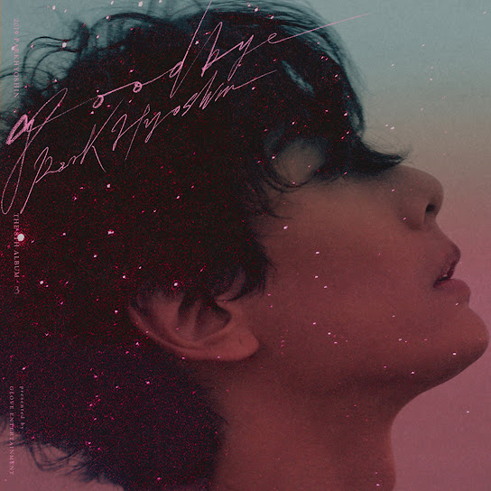
박효신
박효신 • Goodbye
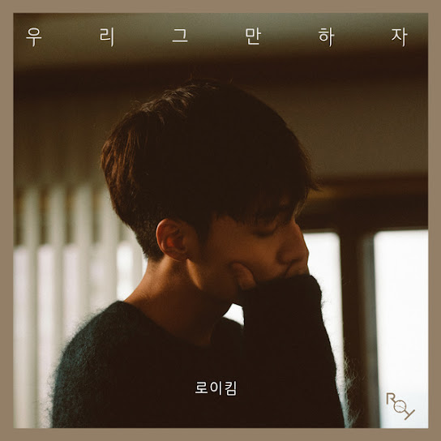
우리 그만하자
로이킴 Roy Kim • 우리 그만하자
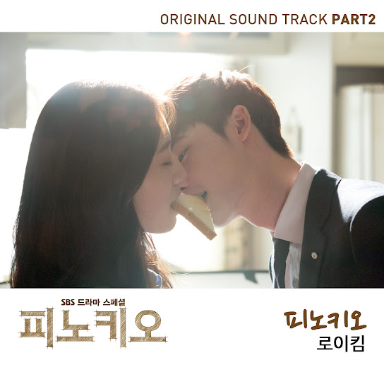
Pinocchio
로이킴 Roy Kim • Pinocchio
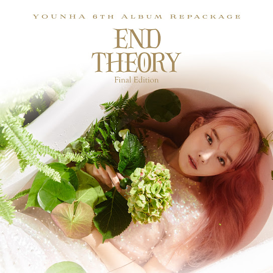
사건의 지평선
윤하 • YOUNHA 6th Album Repackage ....
잊고 있던 좋은 음악
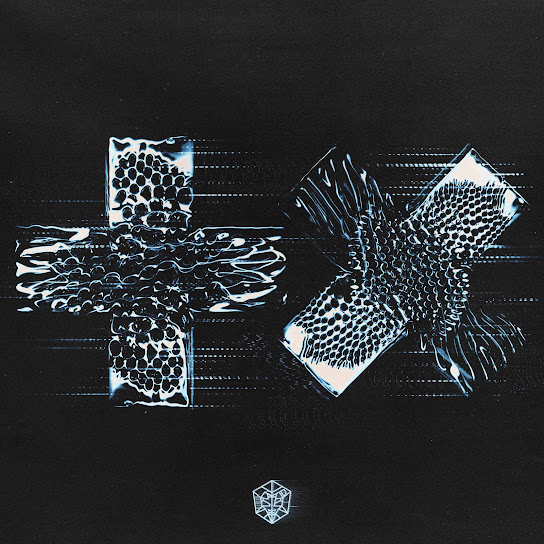
Sentio
앨범 • Martin Garrix
United We Are
앨범 • Hardwell
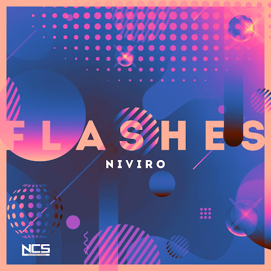
Flashes
싱글 • NIVIRO
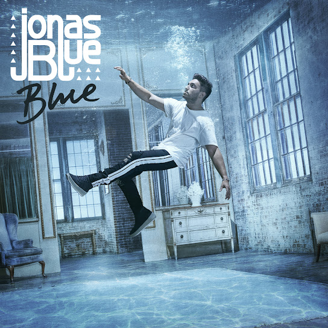
Polaroid
노래 • Jonas Blue(조나스 블루)
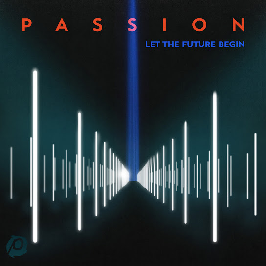
Jesus, Only Jesus(Live)
노래 • Passion
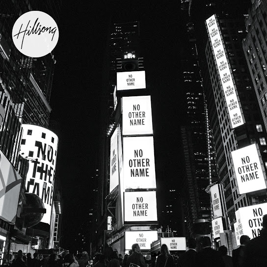
Broken Vessels(Amazing Grace)
노래 • Hillsong Worship